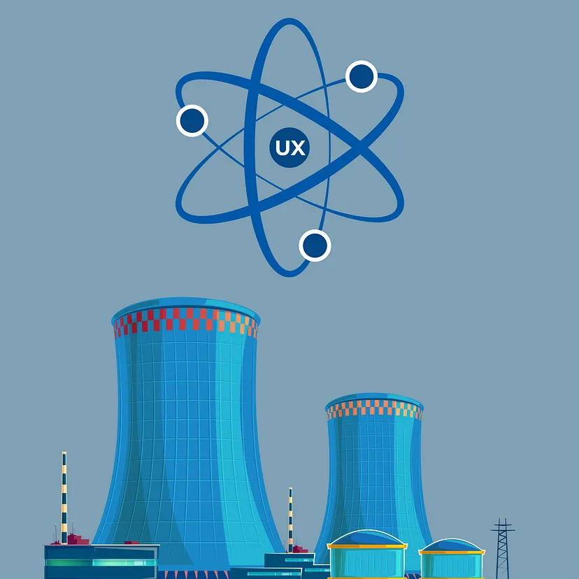

Атомна енергетика
Про атомну енергетику
Атомна енергетика — це галузь енергетики, яка використовує ядерну реакцію для виробництва електроенергії. Основною технологією, яка використовується в атомній енергетиці, є ядерна реакція поділу атомів урану або плутонію, відома як ядерний розпад.
Основні переваги атомної енергетики
Основні компоненти атомної енергетики включають ядерний реактор, де відбуваються ядерні реакції, генератор, який перетворює теплову енергію, вироблену реактором, на електричну енергію, і системи безпеки, які забезпечують контроль і запобігання можливим аварійним ситуаціям.
Висока енергетична потужність
Атомні реактори мають значно вищу енергетичну потужність порівняно з іншими джерелами енергії, такими як вугіль або нафта. Це дозволяє ефективно забезпечувати електроенергією великі міста та промислові центри.
Низькі викиди вуглецю
Атомна енергетика не викидає значні обсяги парникових газів, що призводять до зміни клімату. У порівнянні з традиційними енергетичними джерелами, такими як вугілля або нафта, атомна енергетика має значно менший вплив на глобальне потепління
Незалежність від нафти та інших джерел енергії
Атомна енергетика може забезпечити країну власними джерелами енергії, що дозволяє знизити залежність від імпорту нафти або інших видів палива. Це особливо важливо для країн, які не мають значних власних природних ресурсів.
Постійний потік енергії
Атомні реактори забезпечують стабільний постійний потік електроенергії, оскільки вони не залежать від погодних умов чи сезону, що часто впливає на відновлювані джерела енергії, такі як сонячна або вітрова енергія.
Достатність ресурсу
Уран, який використовується в атомних реакторах, є достатньою і відносно розповсюдженою сировиною. Запаси урану забезпечують довготривалий потік енергії, а також існують технології використання відпрацьованого палива та збагачення урану, що дозволяє максимально використовувати наявні ресурси.
Проте, атомна енергетика також має свої виклики та потенційні проблеми
В багатьох країнах атомні електростанції займають провідне місце, виробляючи великий процент електроенергії. Проте їхня експлуатація пов'язана з низкою екологічних проблем. До них можна віднести: утилізацію радіоактивних відходів, великі об'єми теплових забруднень, виробництво та розповсюдження ядерної зброї.
Ризик ядерних аварій
Найбільш відомою прикладом є аварія на Чорнобильській АЕС в 1986 році та аварія на Фукусімській АЕС в 2011 році. Ядерні аварії можуть мати серйозні наслідки для людського здоров'я та довкілля.
Управління ядерними відходами
Атомна енергетика генерує відходи, які мають бути правильно управляні та знешкоджені. Ядерні відходи мають тривалий період розпаду та можуть бути небезпечними для довкілля та здоров'я людей. Тому потрібні ефективні системи зберігання, переробки та утилізації ядерних відходів.
Потенційне використання ядерної енергії у військових цілях
Однією з проблем атомної енергетики є потенційна зловживання ядерною технологією для військових цілей. Якщо ядерна технологія потрапить у неправильні руки або буде використана зловмисно, це може призвести до серйозних наслідків для безпеки та стабільності.
Високі витрати на будівництво та утримання
Атомні електростанції потребують значних витрат на будівництво, утримання та розміщення ядерних реакторів. Вони також потребують високого рівня технічної експертизи та строгих норм безпеки, що також впливає на загальну вартість.
Публічна думка та безпека
Атомна енергетика є предметом публічного обговорення та дискусій через свою потенційну небезпеку та наслідки. Існує значна кількість людей, які сприймають атомну енергетику як ризиковану та необхідну перегляду.
Загалом, атомна енергетика має свої переваги, такі як висока енергетична потужність та низькі викиди вуглецю, але також потребує суворого контролю, безпеки та управління відходами.
Насамперед, перед використанням атомної енергетики слід ретельно оцінювати її переваги та потенційні ризики, а також розвивати та сприяти розумному та ефективному використанню цієї технології.
Атомна енергетика є стабільним джерелом електроенергії, забезпечуючи постійний потік енергії без залежності від погодних умов або сезону, що дозволяє задовольнити високі потреби споживачів.
Атомна енергетика має високу енергетичну плотність, що означає, що для виробництва великого обсягу електроенергії потрібен невеликий обсяг палива, забезпечуючи економічну ефективність та скорочення залежності від природних ресурсів.
За допомогою атомної енергетики можна зменшити викиди парникових газів та сприяти боротьбі зі зміною клімату, оскільки вона не використовує вуглець та інші шкідливі викиди, які зазвичай пов'язані зі згорянням вуглеводнів у традиційних джерелах енергії.